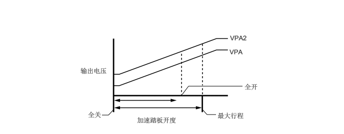

构造
采用了非接触型加速踏板传感器总成。此传感器采用霍尔集成电路*1，其利用霍尔效应*2（根据加速踏板踩下量直接接收输出电压）作为电信号恢复磁场强度。加速踏板踩踏量改变时，霍尔集成电路的电流流向的磁场角度发生变化。因此，霍尔效应产生的电位差的强度发生变化并作为加速踏板踩踏量信号发送到 ECM。此外，为确保可靠性，采用了具有不同传感器输出特性的双重传感器（主和副）。
*1：利用磁场电压差引起的电动势的电子部件。
* 2：在与电流不平行的磁场内通过导体或半导体产生垂直于电流流动的电位差的现象。
